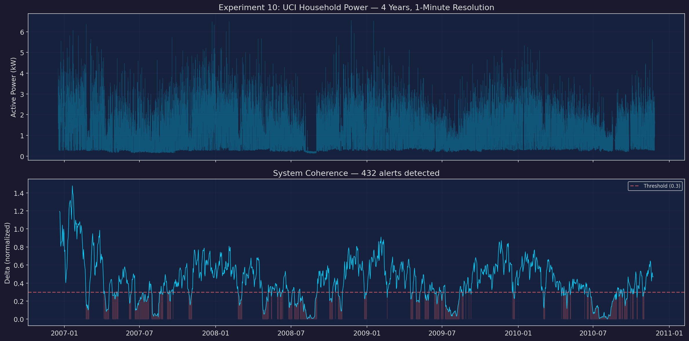
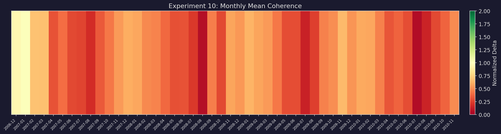
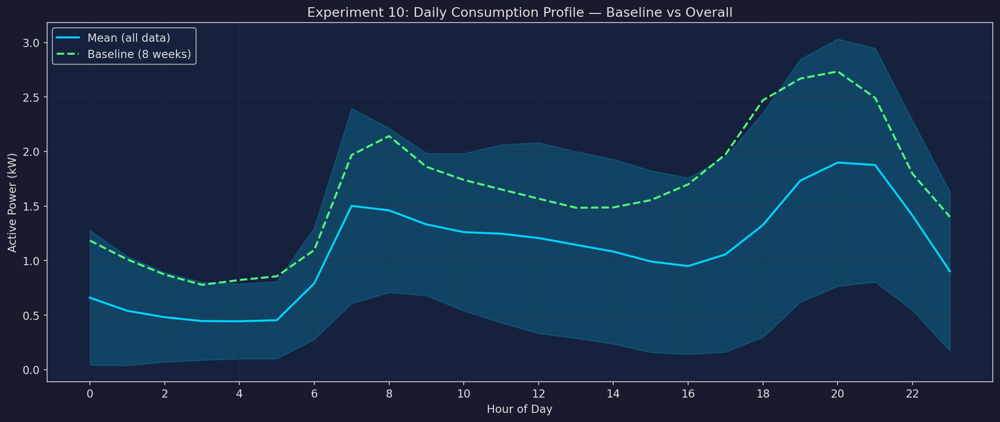
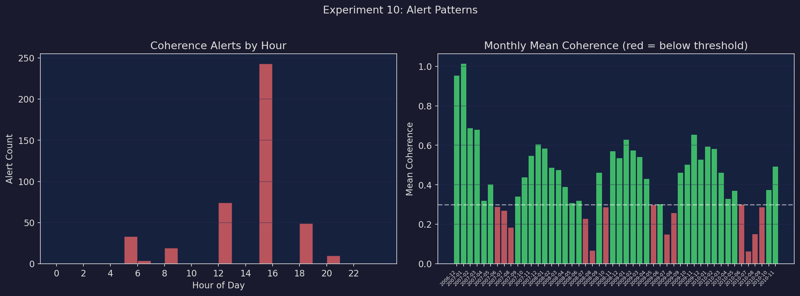
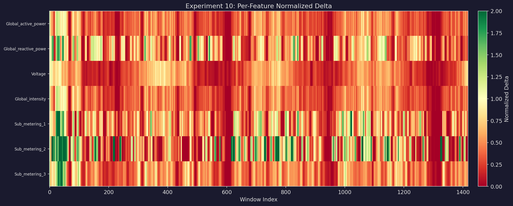

Key Results
Across 34,190 hours of household power data (1,418 rolling windows), the Δ coherence metric triggered 432 alerts while variance-based detection found only 1. Of the Δ alerts, 431 were coherence-only detections — structural regime shifts invisible to variance. The mean Δ value of 0.425 indicates sustained departure from baseline coherence across the dataset.
Method Comparison
Δ Coherence
Alerts: 432
Mean Δ: 0.425
Threshold: 0.3
Sensitivity: Structural shifts
Variance
Alerts: 1
Z-score threshold: 2.5
Missed: 431 events
Sensitivity: Amplitude only
Experiment Plots
Coherence Overview

Monthly Coherence Heatmap

Daily Consumption Profile

Alert Distribution

Multi-Feature Coherence

Monthly Coherence
| Month | Mean Δ | Level |
|---|---|---|
| 2006-12 | 0.9530 | High |
| 2007-01 | 1.0135 | High |
| 2007-02 | 0.6874 | High |
| 2007-03 | 0.6782 | High |
| 2007-04 | 0.3187 | Low |
| 2007-05 | 0.4017 | Moderate |
| 2007-06 | 0.2873 | Low |
| 2007-07 | 0.2680 | Low |
| 2007-08 | 0.1836 | Low |
| 2007-09 | 0.3412 | Low |
| 2007-10 | 0.4374 | Moderate |
| 2007-11 | 0.5460 | Moderate |
| 2007-12 | 0.6057 | High |
| 2008-01 | 0.5832 | Moderate |
| 2008-02 | 0.4864 | Moderate |
| 2008-03 | 0.4754 | Moderate |
| 2008-04 | 0.3884 | Moderate |
| 2008-05 | 0.3066 | Low |
| 2008-06 | 0.3182 | Low |
| 2008-07 | 0.2280 | Low |
| 2008-08 | 0.0655 | Low |
| 2008-09 | 0.4603 | Moderate |
| 2008-10 | 0.2859 | Low |
| 2008-11 | 0.5703 | Moderate |
| 2008-12 | 0.5347 | Moderate |
| 2009-01 | 0.6278 | High |
| 2009-02 | 0.5744 | Moderate |
| 2009-03 | 0.5398 | Moderate |
| 2009-04 | 0.4305 | Moderate |
| 2009-05 | 0.2982 | Low |
| 2009-06 | 0.3011 | Low |
| 2009-07 | 0.1476 | Low |
| 2009-08 | 0.2569 | Low |
| 2009-09 | 0.4610 | Moderate |
| 2009-10 | 0.5022 | Moderate |
| 2009-11 | 0.6541 | High |
| 2009-12 | 0.5263 | Moderate |
| 2010-01 | 0.5927 | Moderate |
| 2010-02 | 0.5807 | Moderate |
| 2010-03 | 0.4614 | Moderate |
| 2010-04 | 0.3278 | Low |
| 2010-05 | 0.3697 | Moderate |
| 2010-06 | 0.2989 | Low |
| 2010-07 | 0.0622 | Low |
| 2010-08 | 0.1498 | Low |
| 2010-09 | 0.2864 | Low |
| 2010-10 | 0.3740 | Moderate |
| 2010-11 | 0.4926 | Moderate |
48 months analyzed. Coherence levels: High ≥ 0.6 Moderate 0.35–0.6 Low < 0.35
Dataset
UCI Household Electric Power Consumption — Measurements from a single household in Sceaux, France. 4 years of data (Dec 2006 – Nov 2010) at 1-minute resolution, resampled to hourly (34,190 readings). 7 electrical features covering global power, voltage, intensity, and 3 sub-metering circuits. Source: UCI Machine Learning Repository.
Configuration — Baseline: first 8 weeks. Window: 168 hours (1 week), step 24 hours. Δ threshold: 0.3. Resample: 1h. Variance z-score: 2.5.
Navigation